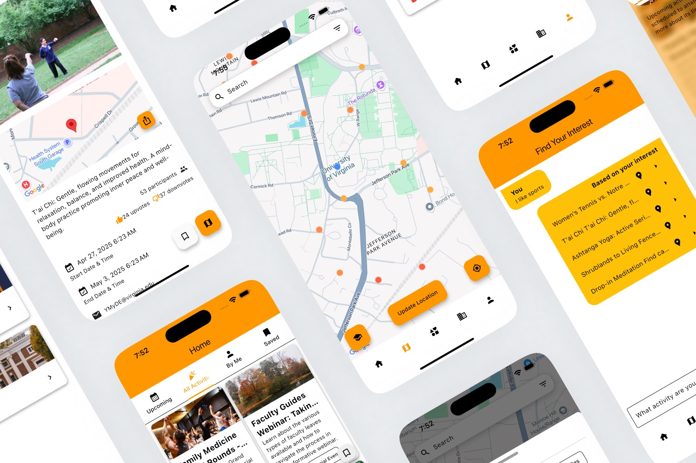

HoosMap
A two-sided campus events app I came up with and led on the product side at HooHacks 2025, UVA's hackathon: one live map of what's happening on Grounds, and a direct way for students and clubs to post events.


Screens from our HooHacks 2025 Devpost submission. Click to enlarge.
01
The problem
Campus organizations promoted events on their own social-media accounts, so students had no single place to see what was happening, where, and when.
I came up with the idea and pitched it to my team: a two-sided app where students discover events on a map, and anyone, from a single student to an official club, can post events directly instead of relying on scattered feeds.
02
What we built
Seed supply before day one
An events app with no events is useless. Our scraper pulled real titles, locations, and images from UVA's official calendar, Gemini wrote short descriptions, and I wrote the scripts that loaded seed events into Firebase.
Let anyone post
Any signed-in student can post an event. Clubs get organization pages with admins and members, and can post to the whole campus or to members only.
A map and filters for clear intent
A Google Map of upcoming events, with filters for 19 categories, distance from half a mile to 10 miles, keyword search, and bookmarks.
Plain-language search for fuzzy intent
On the “Find Your Interest” page, students type what they want, like “I like sports.” Gemini embeddings and ChromaDB return the five closest upcoming events, each one tap from the map.
Rank by what the community likes
Events are scored on participants (40%), up and down votes (40%), and distance (20%), so popular events rise to the top.
Campus-only sign-in
Sign-up requires a @virginia.edu computing-ID email, which keeps the community on Grounds.
03
How it fits together
How the pieces connect, redrawn from the code.
04
Screens


From our Devpost submission. Click any image to enlarge it; scroll sideways for more.
05
My role
I came up with the idea and led the product side: I framed the problem, ran our feature brainstorming, defined the journeys for students and event organizers, and gave the final pitch.
On the build side, I wrote the scripts that loaded seed events into Firebase, added a Flask endpoint for user data, and designed the app icon. Yu Cao led the Flutter frontend, and Brian Tran led the Flask backend, the Firebase–ChromaDB integration, and the scraper.
06
Outcome & next steps
In about 20 hours we shipped a working demo that covered the full loop: seeded events, a live map with filters, plain-language search, and posting by students and clubs. We didn't run it long enough to measure adoption, so these are the metrics I'd judge the next version on:
- Organizer activation and weekly active events
- Search-to-detail conversion
- Join and bookmark rates
- Repeat discovery
Before scaling, it would need event-freshness checks, organization verification, content moderation, duplicate detection, and better recommendation quality, plus the admin tools and smarter AI filters we listed on Devpost.
07
What I learned
Two-sided products live or die on cold start.
Scraping gave students something to see on day one, and open posting gave supply a way to grow on its own. I saw the same problem from the marketing side at JOOPI, a dating app that couldn't be useful until enough people joined.